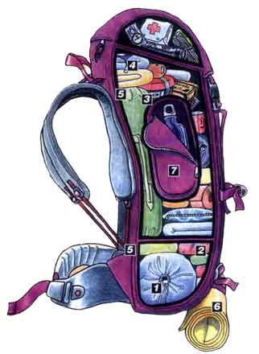

Kamp Çantası Nazır Hazırlanır?
Dağcıların, izcilerin ve kampçıların olmazsa olmaz kamp ekipmanlarından birisi de kamp çantasıdır. Kamp çantasında doğada geçirilecek zaman dilimi içerisinde kullanılabilecek ve ihtiyaç duyulacak tüm kamp ekipmanları bulunmaktadır. Kamp çantası hazırlarken dikkat edilmesi gerekenleri siz doğa severler için kaleme aldık. Hepimiz uzun veya kısa kamplara çıkmadan önce çantamızı hazırlarken “Acaba unuttuğum bir şey var mı? Yarı yolda geri dönmek istemiyorum. Ve çantam hafif olsun.” gibi cümleler kurarız. Peki; kamp çantası nasıl hazırlanır, kamp çantası hazırlarken dikkat edilmesi gereken detaylar nelerdir? Kamp çantası hakkında tüm merak ettiklerinizi bu yazımızda bulabileceksiniz.

Kamp Çantasının Özellikleri Nasıl Olmalıdır?
- Kamp çantası sağlam olmalıdır. Çanta almadan önce sağlamlığı ve dikişleri kontrol edilmelidir. Aksi takdirde daha kamp alanına varmadan yırtılan bir çanta sizi rahatsız edecek ve kötü bir tecrübe yaşamış olacaksınız.
- Kamp çantasının metal ve esnek desteklerinin olması gereklidir. Böylece çantanız dik ve geniş şekilde duracaktır.
- 5 günlük bir kamp için 60 litrelik bir kamp çantası ideal olmaktadır. Uzun kamplarda ve uzun yürüyüşlerde 60+10 litrelik daha uzun ve geniş çantalar tercih edilmelidir.
- Kamp çantası alırken çantanın vücuda güzel bir şekilde uyması sağlanmalıdır. Her çanta herkese uymayabilir. Çanta alırken yüklü bir çantanın sırtta denenmesi tavsiye edilmektedir. Boş bir çantayı sırtınıza taktığınızda sırtınıza uyup uymadığını anlamanız zor olacaktır.
- Kamp çantası hazırlarken her an elinizin altında olması gereken ekipmanları (el feneri, harita, yağmurluk gibi) üst kısma; yedek kıyafetler, uyku tulumu ve pişirme araçları gibi ekipmanları ise biraz daha alt kısma yerleştirmelisiniz.
- Hafif eşyalar üst kısımda ağır eşyalar ise alt kısımda olmalıdır. Kamp çantasının ağırlık merkezi ile vücudun ağırlık merkezi aynı hizada olmalıdır.
- Kamp çantası sırta ve bele takıldığı zaman arada hava geçebilecek kadar boşluk olmalıdır. Kamp çantasının vücuda temas ettiği yerler ağırlığı kaldırabilecek bölgeler olmalıdır.
- Birbiriyle ilişkili malzemeler toplu şekilde çantaya yerleştirilmelidir. Böylece hem eşyalarınıza kolay ulaşırsınız hem de eşyalarınız yağmur veya sudan etkilenmemiş olur. Örneğin çoraplar bir poşete konulmalı ve o şekilde çantaya konulmalıdır. Aksi takdirde çoraplarınızın birisi üst kısıma birisi alt kısımda olur ve aramak zorunda kalırsınız.